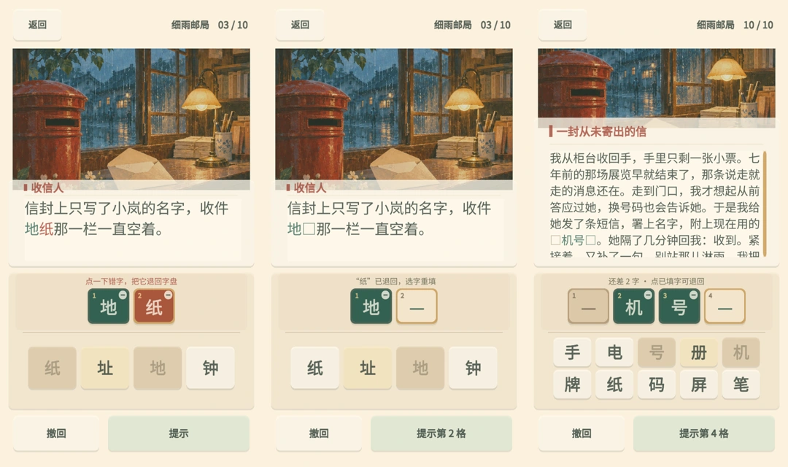
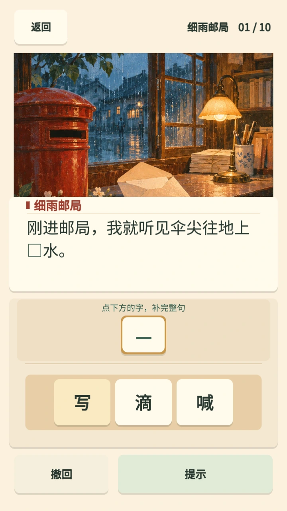

竖屏文字解谜 / 书信叙事
为你赋诗.
从候选字里补完一封信。答对后读回完整句子、收下邮戳，再打开下一封来信。
Unity · Windows 试玩版
第一封信只教一个动作
先高亮候选字盘，等遇到多字题才引导切换字格。答错时保留当前焦点，提示只补选中的一格，已经填对的字继续保留。




解谜结束，把注意力还给信纸
候选字盘收起，把空间留给完整句子、结语和邮戳。序章结尾从雨夜过渡到天亮，主题书架继续呈现可读内容和解锁进度。
竖屏文字解谜 / 书信叙事
从候选字里补完一封信。答对后读回完整句子、收下邮戳，再打开下一封来信。
Unity · Windows 试玩版
先高亮候选字盘，等遇到多字题才引导切换字格。答错时保留当前焦点，提示只补选中的一格，已经填对的字继续保留。


候选字盘收起，把空间留给完整句子、结语和邮戳。序章结尾从雨夜过渡到天亮，主题书架继续呈现可读内容和解锁进度。